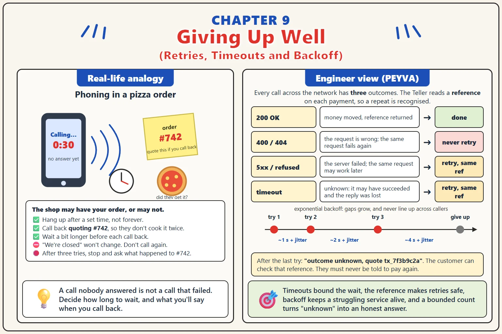

Chapter 9
Giving Up Well: Retries, Timeouts and Backoff
A call that has not answered is not a call that failed. Deciding when to stop waiting, and what to do next, is the whole skill.

1. Why
- A remote call has three outcomes, not two: success, failure, and no answer. The third is indistinguishable from a slow success, and a caller that treats it as failure will resend a request that already went through.
- Without a timeout, a call can wait forever. A dead peer does not send a refusal; it sends nothing, and the OS may keep the connection open for minutes. Every call across a process boundary needs a deadline, chosen from how long a good answer actually takes.
- A timeout is not permission to retry. It is permission to retry only an idempotent request. Retrying a payment that carries its reference is safe because the receiver deduplicates it; retrying one without is how a customer pays twice.
- Retrying immediately makes a struggling service worse. Every caller that times out and resends doubles the load at the moment it can least take it, which is a retry storm. Backoff spaces retries out; jitter stops every caller retrying at the same instant.
- Retries are bounded. After some number of attempts the honest answer is 'I do not know whether this happened', and the caller has to surface that rather than loop. A payment stuck in that state is a support ticket, not a bug to hide.
- Some failures should not be retried at all. A 400 will be a 400 again; an insufficient balance will still be insufficient. Retrying those wastes the attempts you have and delays the answer the caller needed.
- The rules for one hop compound across hops. If every layer retries three times, a single request can become twenty-seven at the bottom. Retry once, at the edge that can dedupe, and let the layers underneath fail fast.
2. Concepts
- Timeout. The longest a caller waits before treating a call as unanswered. Chosen from measured latency, not guessed.
- Unknown Outcome. The call timed out. It may have succeeded, failed, or be about to succeed. The caller cannot tell and must not assume.
- Retry. Sending the same request again after an unknown outcome. Safe only when the request carries a reference the receiver deduplicates.
- Exponential Backoff. Waiting longer between each retry: one second, then two, then four. Gives the peer time to recover instead of piling on.
- Jitter. A random fraction added to each wait so that many callers do not retry in lockstep.
- Retry Storm. Callers timing out and retrying at once, multiplying load on a service exactly when it is struggling.
3. Build It Hands-on Building in Go, change in Chapter 0
Plan-and-Solve. The plan is a table of failure and response. Written first, it is the code's specification; written after, it is a story about the code.
Documented in The Prompt Report: Zero-Shot, Plan-and-Solve
Every prompt below is copied with these rules, about 725 tokens for the chapter
Build this in Go, standard library only.
Code in peyva/<component>/, one folder per component.
Money: exact decimal or integer minor units, never floating point, two decimal places.
The goal and invariants are in peyva/goal.md.
The Portal is plain HTML and CSS. No framework, no build step, no dependencies.
It lives in peyva/portal/. Anything it needs from the server is Go, standard library only.
One customer's wallet at a time, never everyone's at once. A switcher at the top says whose.
New work joins the menu.
The goal and invariants are in peyva/goal.md, the look in peyva/portal/design.md.
The goal and invariants are in peyva/goal.md.
1 of 3 Plan~248 tokens
A page sends a payment to a service over a network, and the service records the payment and answers with a reference. The request already carries a reference the service uses to recognise a repeat. Before writing any code, make a plan as a table. Rows: every distinct way that call can end, including the response being lost after the money moved, the connection being refused, the call hanging, a 4xx, and a 5xx. Columns: whether the caller can know if money moved, whether retrying is safe, whether retrying is useful, and what the caller should do. Then say how long the timeout should be and how you would find that number from a running system rather than guessing it. Say how many retries, how the wait between them grows, and why the wait should not be exactly the same for every caller. Done when I have the table, a timeout with a method behind it, and a retry policy that never retries a case where retrying is unsafe or useless.
2 of 3 Build~269 tokens
The Gateway forwards a payment to the Teller and waits for an answer with no deadline, and the Portal resends when it hears nothing. Carry out the plan you wrote. Give every call across a process or network boundary a timeout. On an unknown outcome, retry with the same reference, with exponential backoff and jitter, a small fixed number of times. Never retry a 4xx. After the last attempt, answer the caller with an honest 'outcome unknown, quote this reference' rather than a failure. Then prove it: make the Teller sleep past the timeout on the first attempt only, send one payment, and show me from the Ledger that it was applied once and from the log that it was attempted more than once. Done when a slow first attempt results in exactly one Ledger entry pair, a 400 is never retried, and the log shows the growing gaps between attempts.
3 of 3 Portal~208 tokens
Send waits for an answer with no limit, and a customer who gives up and taps again has no idea whether the first tap paid. Give Send a deadline. Past it, the page says the outcome is unknown and shows the reference, and the button offers to check rather than to send again. Checking asks the server what happened to that reference. Done when a deliberately slow server leaves the customer with a reference and a way to find out, never with a second payment.
Quick tip: A retry without an idempotency key is a duplicate payment with extra steps.